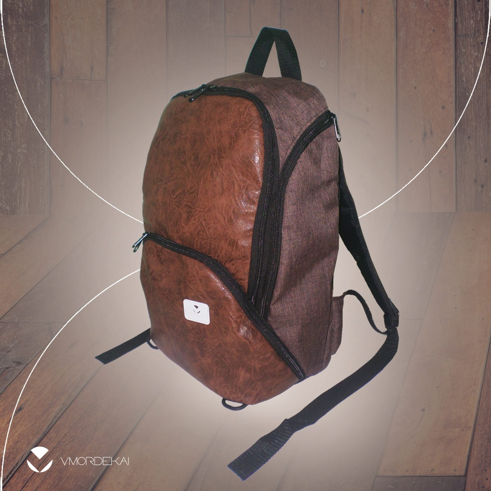

VMK-MOC-007 · Mochila

Seu design ergonômico distribui o volume de forma confortável, além de disfarçar o volume da mochila. Ao todo possui 4 bolsos externos, com porta-sombrinha e garrafa d'água nos bolsos laterais. O acesso principal possui bolso para notebook, porta-documentos, porta-livro de bolso e estojo removível no estilo da mochila; na lateral, porta-celular. Além disso, pode ser acoplada na base uma bolsa CYLINDER, aumentando a carga em +9 L e deixando o conjunto perfeito para viagens.